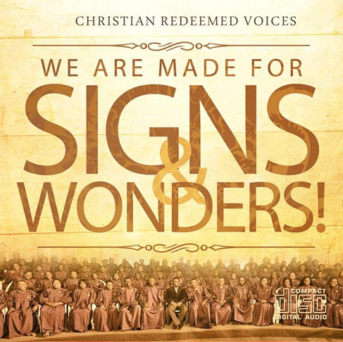

October 27th, 2013.
Crusades, Prisons ministration, Hospital ministration, Television programmes, Campus ministry (C.F.I.), Helps (charity) etc... In CGMi everyone is included. We have several fellowship groups where believers meet people of same age and mind and share their faith and experience and have fellowship with God.
The young group grew steadily as they organised picnics, bible and academic quiz, games and other activities that help facilitate fellowship. That was mainly Faith Arena in the years 1986-1988. It started in Miracle Center in 1986 before C.G.M. Headquarter moved to Faith Arena that same year.

In the year 1986, American Missionaries Gary and Harriet Ham observed that their teenage sons did not understand the messages and the proceedings of normal services in church. They both wondered why and sought to prayerfully seek a solution to their observation. They eventually came up with the idea of organising Sunday school for teenagers. They thought of doing it in way that it will appeal to their group. The Teenage group thrived for a while but the need to become more formal became a necessity. The couple now sought the advice and permission of the Archbishop Most Rev Prof. Benson Idahosa JP. The Archbishop gave his blessi9ngs andn the group was named Agape Force.
The young group grew steadily as they organised picnics, bible and academic quiz, games and other activities that help facilitate fellowship. That was mainly Faith Arena in the years 1986-1988. It started in Miracle Center in 1986 before C.G.M. Headquarter moved to Faith Arena that same year.
The time then came for the Missionaries to go back to America. The question was: who will now be the new leader? Deacon Ogbe Oviaesu was asked to take over; he however requested to be allowed to remain with the children’s Department. The Archbishop commissioned three young ministers namely – Rev Humphery Areghan, Rev Francis Umemezia and Rev Festus Akhimien. As God would have it, Rev Humphery Areghan took up the mantle of leadership in the year 1988. He got started a teenage executive and got the group recognizsed in the Church Council and Constitution. He was named the National Director of the group and got the group established in the main branches of Church of God Mission nation wide. In 1991 the group had the first national camp meeting and more other camp meetings were organised in the preceeding years ( the first camp meeting was held in 1991 with less than 100 campers). In the year 1993, he formed a national leadership that comprises of Zonal Coordinators to oversee the branches from Headquarters to the grassroots.
Today, over 25 years later the group is well established in most of the branches both in the cities and rural areas and several sister churches. It had also become the pioneering church based teenage group in the country. It has produced many generations of leader that the Church is proud of. Men like Pastor Andrew Abiodu who was the first President, Rev and Mrs Ubamadu, Rev Wale Ajayi, Rev James Areghan, Rev Osas Obarisiagbon, Rev Tobe Godson, Martins Ugege, Rev Henry Maido, The Okhuoyas and a whole lot of others across the globe doing very well.
The group has carried out a lot of outreach to rural areas around Benin City and have been involved in some community projects. The rural the rural communities include Ekenwan barrack ( the church there was given a roof), Egor village Abudu village Aihuobakun village where a borehole project is ongoing and many other communities.
USING GOD'S WORD TO GROOM THE FUTURE
Christian Fellowship International (CFI) is Church of God Mission International's University and Polytechnics campus outreach.
Our core objective is evangelism, youth empowerment, leadership development, and National Transformation. Our motto is; using God's love to groom the future today.
We have forty chapters located in the different higher institutions in Nigeria these include University of Benin(UNIBEN), Ambrose Alli University Ekpoma, Benson Idahosa University (BIU), University of Lagos(UNILAG), University of Maiduguri (UNIMAID), University of Calabar (UNICAL), Federal Polytechnic Auchi, University of Jos(UNIJOS), PTI Warri, University of Ibadan (UI), and many more.
Our main event occurs every Easter season in any of our chapters chosen for the year called JAM SUMMIT (Jesus And Me Summit).
In this programme, students from allover Nigeria come together to worship God, fellowship with one another and get strength and direction from God for the next season. CFI is a dynamic gathering of creative young people.
SPECIAL VOCATION BIBLE SCHOOL
We run 3 sessions in a year for 8 weeks.Class Schedule: Mondays at 5pm-7pm, Tuesdays at 5pm-7pm and Saturdays at 3pm-6pm!
Members include: Bishop John Bienose (Portharcourt), Bishop FEB Idahosa (Benin) and Rev.Dr. Festus Akhimien (Benin) to mention a few!
Our alumni often tell us they ENJOYED the rich and fulfilling time they experienced while attending SVBS. They say it wasn’t about the many activities and events they attended or participated in, but it was the relationships they built with fellow students and their new zest for the word of God.
Friendships of a lifetime were established in our warm and intimate classroom setting, small interactive discussion groups, and activities planned around serving others. We strive to create the environment for utter strangers to become personal friends. Whether sipping a drink by the dispenser in the class room or ministering to the lost or sick on our practical trips, true friendships were born.
The diversity of our student body makes SVBS a unique and desirable family unit where anyone can feel at home. We attract like-minded people of all ages and from all walks of life.
Christian Redeemed Voices is the legendary choir of Church of God Mission International. For over three decades, the choir has being a pacesetter of church music in Nigeria. Great music ministers, church leaders, local and international artist have emerged from her. Our purpose is to invoke Gods presence into every service through our music.
"It came even to pass, as the trumpeters and singers were as one, to make one sound to be heard in praising and thanking the Lord ; and when they lifted up their voice with the trumpets and cymbals and instruments of music, and praised the Lord, saying, For he is good; for his mercy endureth for ever: that then the house was filled with a cloud, even the house of the Lord ;" - 2 Chronicles 5:13 KJV
Music Director - Pastor Emmanuel Awipi
Praise Team Leader - Pastor Peace Oseghale
Orchestra Leader - Rev Okagbare
Tuesdays - 4:30pm
Saturdays - 4:00pm
- Must be born again
- Must be a committed member of the church
- Must complete a successful auditioning
- Must attend weekly rehearsals
SIGNS AND WONDERS
Producer: Kaycee Oghenenyerhovwo Avwomakpa
Vocals: Christian Redeemed Voices

Recorded at: GiG SOUND STUDIO, Benin Nigeria.
Remote Recording by: GiG SOUND at CGMI Faith Arena, Benin Nigeria
Mixing and Mastering by: Kaycee Oghenenyerhovwo Avwomakpa
Audio Assistants: Uzor Uwabudike, Emmanuel Jones Edobor, John Solomon
The Children Ministry is the Children’s arm of Church of God Mission International (CGMI) established to evangelise,
disciple, teach, train, and preserve the next generation for Christ.
The motto for this group is
The Heritage of the Lord
The Children’s Department of Church of God Mission International was started by Rev. (Mrs) Mary Igunma, who was the first typist for Archbishop Benson Idahosa in 1973. Others who had worked as National Directors adding their own impact to the Ministry were: Rev. (Mrs.) Jenny Daniels, Rev. Ogbevoen Oviaesu, Rev. (Mrs.) Juliana Akhimien, Rev. (Mrs.) Osariemen H. Alile and the current National Director, Rev. (Mrs.) Joy Oke Ayere.
The growth of the Ministry has impacted many homes in Christian world, as they occur in leadership positions in the Church. Hundreds of children graduate from the Children’s Church every year into the Agape Force Ministry nationally.
The National Executives are:
The members of the Christian Youth Fellowship of Church of God Mission International (Hereinafter referred to as "The Fellowship") Realizing the need for a viable fellowship of the youth in our mission for this end time, establishing an image of the youths, that cannot be despised, a people founded on God's sure word of prophecy, with integrity and for the purpose of promoting the welfare of members.
We believe strongly that we can contribute substantially to the upliftment in the quality and image of our churches and the ever high flying banner of Christ in our environment through interaction and participation in the daily run of societal life, inspiring and motivating the youths to an enhanced fellowship in the spirit, education, exposure, meaningful employment and participation in business, government and ministry.
As a people with fire of the spirit burning in our hearts and the wings of obedience on their feet, do hereby enact and give to ourselves this governing memorandum.
To raise God-class leaders with integrity, moral discipline, passion, for excellence, accountability and dignity of labour.
CHRISTIAN WOMEN FELLOWSHIP INTERNATIONAL
Christian Women Fellowship International (CWFI) as a Faith-Based Non Governmental Organisation was founded in 1974 and had her first Convention in 1975. Since then and particularly in the last 12 years CWFI has helped Christian women to understand their calling, and the potential God has deposited in them.
Her International Headquarters is located at CWFI Secretariat, 4, Faith Way, GRA, Benin City, Nigeria.
CWFI is involved in evangelism programmes, conventions and conferences, prayer and counseling services, seminars and workshops, responding to community needs and the needy, campaigns and public awareness, Christian growth activities, family living programmes, social rehabilitation and reintegration (destitute, orphans and widows) and youth empowerment.
To demonstrate the EVIDENCE OF THE GOSPEL, impacting the world with the power of the gospel.
Our mission is to spread the gospel of our Lord Jesus Christ, build women leaders deeply rooted in Christ with a communal passion for souls and concern for the physical, mental, spiritual and healthy development of women, youth and the family in their areas of operation.
To nurture women of all tribes, race and nationality to accept and receive the gift of God in Jesus Christ’s death and resurrection, thus nurturing them to occupy till He comes while preparing them for the life hereafter in God’s Kingdom. Specifically CWFI Goals are -
The store house was brought to birth by Barr Ruth Evon Eloghosa Idahosa in 1998
The aims are lift up the down cast in the society, to reach out to the needy and transform the total wellbeing of the rejected. It can be described as HAND OF COMPASSION, God’s hand extended to the needy (Gen 41:48-49) It is a dimension of Church of God Mission Int. Inc that aims at reaching the underprivileged both within and outside the ministry. Currently it accepts volunteers who have a dedicated heart of a servant and who are willing to share in the vision of the ministry only to the spiritual needs of the indigents but also the neglected physical and emotional persons.
We go for outreach, hold crusades and visit orphanage homes. The last crusade in Benin City gave birth to the church in Egun village where land was donated to Joseph store house members to build a church for the ministry.
"Let them praise his name in the dance: let them sing praises unto him with the timbrel and harp" (Psalms 149:3)
CGMI Dance Ministry welcomes any child, teenager or youth with a desire to praise the Lord and spread the Gospel of Christ through dance.
The Dance Ministry focuses on different genres of dance, skill building, and pantomiming all while blessing lives through the messages embedded in the routines.
All experience levels are welcome!!
For further enquiries on how to send in your supports, please contact us at;
Church of God Mission Int’l
Global Headquarters
Dance Studio
1, faith Way
G.R.A.
Benin City
Evangelizing the lost for their total transformation spirit soul and body and developing them into leadership through church planting, schools, hospitals etc.
To build people into leadership with a global passion deeply rooted in Christ.
The missions outreach is an arm of Church of God Mission Int’l that focuses on evangelizing the unreached people groups, with the aim of transforming lives through an in-depth undiluted teaching of the word of God. Thus raising end time soldiers that will impact their world for Christ
Our evangelistic strategies include: opening of schools, free medicare, provision of portable water, supply of relief materials where needed, free skill acquisition programs, etc. And these by the grace of God, we have done over the years with great results and testimonies. Our major targets are the animist, idol worshippers, the Muslims and nominal Christians. In view of this in mind, therefore, we have so far evangelized among some people groups in Adamawa State, Edo State, Taraba State, Plateau State, Kogi State, some parts of Western and Eastern regions. In addition, we are working among the Hausa/Fulani people groups of the Northern region.
In some of these places, churches have been planted and missionaries are on ground to nurture them to maturity. The nurtured churches have been handed over to the indigenous believers who are equally working hard reaching their own people with the gospel message of Christ
The churches in Danacha, Wukari in Taraba State, Ikere-Ekiti in Ekiti State, Abocho in Benue State, Bokkos in Plateau State, are yet to get a befitting place of worship. For some, the building project is ongoing and we need finance for the completion. In addition to this, we are in need of mobility-motor cycles, bicycles, and cars, etc for our pastors and missionaries to ease their movement into the very interior villages to touch lives. While some of our churches need musical instruments for praise/worship.
Furthermore, because of the present activities of the Bokko Haram Islamic Fundamentalists and terrorists in the Northern part of Nigeria, where Christians and missionaries have become the object of constant attack, most Mission Agencies including ours, have withdrawn their missionaries from the fields for safety leaving the work there stagnant. This indeed is a major challenge which calls for fervent prayers for peace to be restored.
Ever since the work started, so many testimonies have been recorded in our various fields and the name of God is gloried. The medical team visited Agbede in Edo State were free cataract operation were conducted with great success and testimonies. Among others was the case of a particular woman who had lost her sight to cataract which eventually led to her marriage been broken. However, after the operation she regained her sight and her marriage too was restored. Praise God!
In Oko village in Edo State, schools were supplied with desks and chairs for pupils who were sitting on bare floor to study
In addition, few jobless youths were empowered in Ebedebiri in Bayelsa State when they were presented with motor cycles for commercial purpose.
And of course these and many more physical demonstration of the love of Christ made many to willingly surrender their lives to Christ. Many more communities are already calling on us to come. However, for financial constraints, we would have loved to do more.
Do you know countless of people in the world live each day without hope? Countless people are held bound by the clutches of the enemy, countless souls die each day without giving their hearts to Christ Jesus. This is the time for us to see the world through the eyes of God and rescue the perishing. It is our conviction that every Christian should be a mirror reflecting the image and likeness of Christ to the world and our Mission Agency should be a beacon of light bearing the burden of the nations on her shoulders. The era of waiting for foreign missionaries is over. The baton has been handed over to us to reach the unreached people groups with the message of truth. For how long are we going to continue to pray for the Lord of harvest to send labourers into the field? The field indeed is white unto harvest. The Lord is counting on us as His co-labourers because there are still more territories to conquer and more souls to be saved.
For these to be successful, we need your supports--human support, those who will volunteer as missionaries to the fields, financial and prayer supports etc.